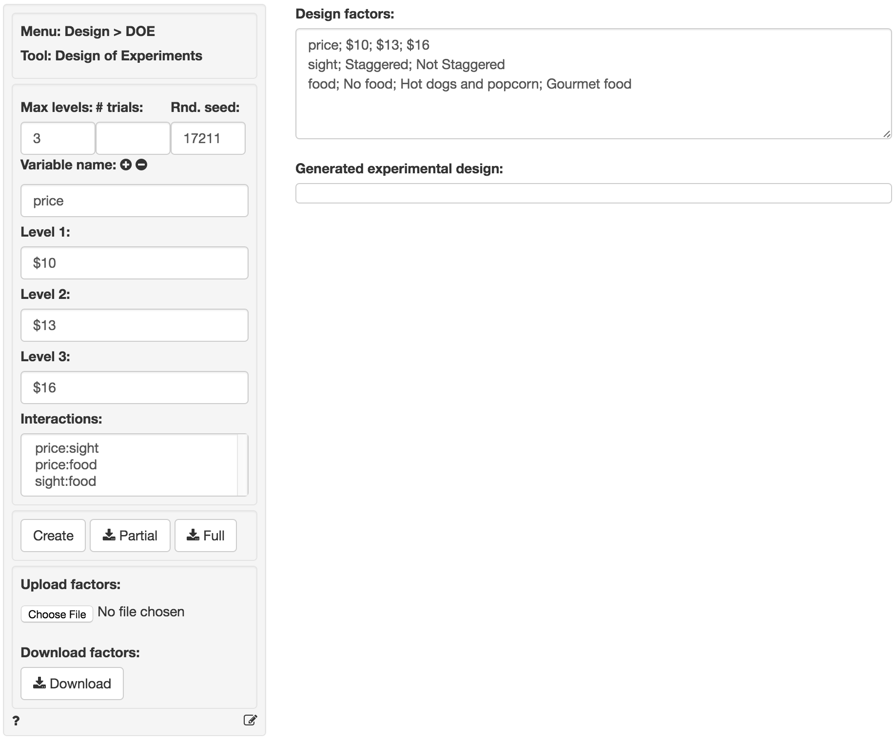
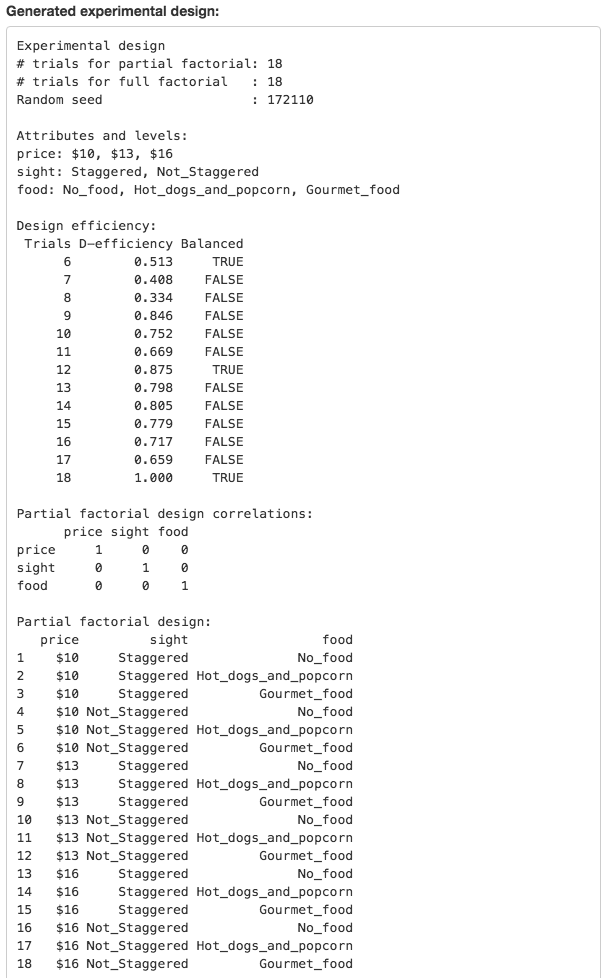
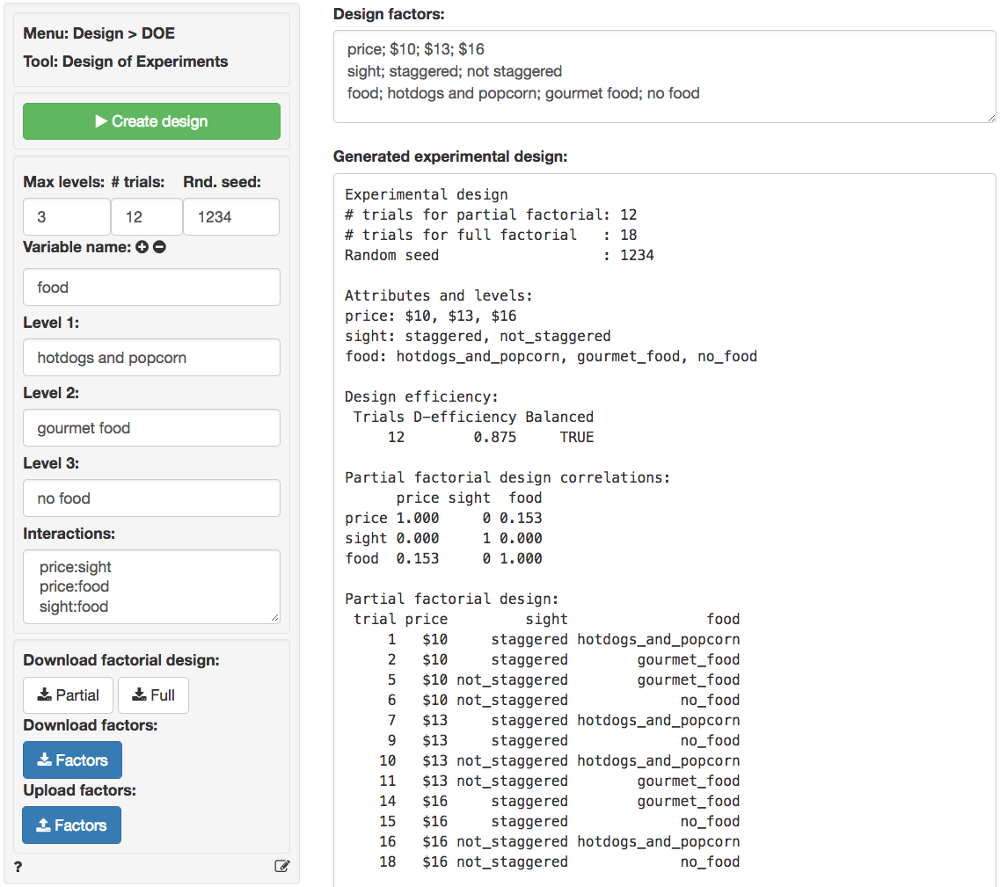

Design > DOE > Design of Experiments (DOE)
Design of Experiments
Example
Suppose we want to test alternative movie theater designs using three factors.
- Price at $10, $13, or $16
- Sight to determine if theater setting should be staggered or not staggered
- Food to determine if we should offer hot dogs and popcorn, gourmet food, or no food at all
Max levels
The factors to include in the analysis have 3, 2, and 3 levels so we enter 3 in the Max levels input.
Variable name and level
Here we enter the factors of interest. For example, enter price as the variable name, $10 as level 1, $13, as level 2, and $16 as level 3. Then click the icon. This will add the provided information about the factor to the Design factors window in the format Radiant needs for analysis. To remove the last line in the Design factors window click the icon.
After entering the required information for each of the three factors your screen should look as follows:

Create design
You are now ready to create an experimental design by clicking on the Create design button. This will generate the following output.

For our example, the ideal design has 18 trials. However, this implies that the partial and the full factorial are the same size. We’d like to find out if it is possible to reduce the number of trials. See # trials below.
# trials
This input can be used to control the number of trials to generate. If left blank Radiant will try to find an appropriate number of trials using the optFederov function in the AlgDesign package.
Lets review the output in Design efficiency. For our example, the goal is to find a design with less than 18 trials that will still allow us to estimate the effects we are interested in (e.g., the main-effects of the different levels of price, sight, and food). Notice that there are several designs that are considered balanced (i.e., each level is included in the same number of trials). We are looking for a design that is balanced and has minimal correlation between factors (e.g., a D-efficiency score above 0.8). You can think of the D-efficiency score as a measure of how cleanly we will be able to estimate the effects of interest after running the test/experiment. The ideal D-efficiency score is 1 but a number above 0.8 is considered reasonable.
The smallest number of trials with a balanced design is 6. This design is balanced simply because 6 is divisible by 3 and 2 (i.e., the number of levels in our factors). However, the D-efficiency score is rather low (.513). The next smallest balanced design has 12 trials and has a much higher D-efficiency. This design is a reasonable choice if we want to estimate the main-effects of each factor level on movie-theater choice or preference.
To generate the desired partial factorial design enter 12 in the # trials input and press Create design. This will generate the following output.

The trial column in the output shows which profiles have been selected from the full factorial design. Note that the off-diagonal elements of the (polychoric) correlation matrix for a partial factorial design will all be equal to 0 only when D-efficiency is equal to 1. The polycor package is used to the estimate the correlations between the factors.
Rnd. seed:
A partial factorial design may not be unique (i.e., there might be multiple combinations of trials or profiles that are equally good). By setting a random seed you ensure the same set of trials will be generated each time you press Create design. However, to see alternative partials factorial designs empty the Rnd. seed box and press Create design a few times to see how the set of selected trials changes.
Interactions
Note that we will not be able to estimate all possible interactions between price, sight, and food if we use a design with 12 trials. This is the trade-off inherent in partial factorial designs! In fact, if we do want to estimate even one interaction (e.g., select price:sight) the appropriate design has 18 trials (i.e., the number in the full factorial design that includes all possible combinations of factor levels).
Partial and Full factorial design
Click on the Partial or the Full button to download the Partial or Full factorial design in csv format .
Upload and Download
To download the list of factors you entered click the Download button. To upload a previously created set of factors click the Upload button and browse to find the desired file.
Report > Rmd
Add code to Report > Rmd to (re)create the design by clicking the icon on the bottom left of your screen or by pressing ALT-enter on your keyboard.